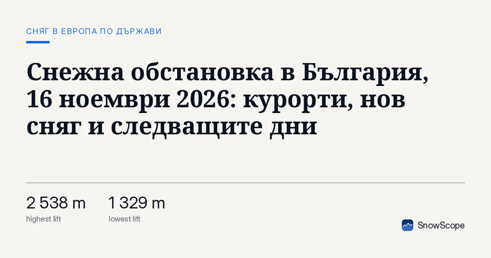
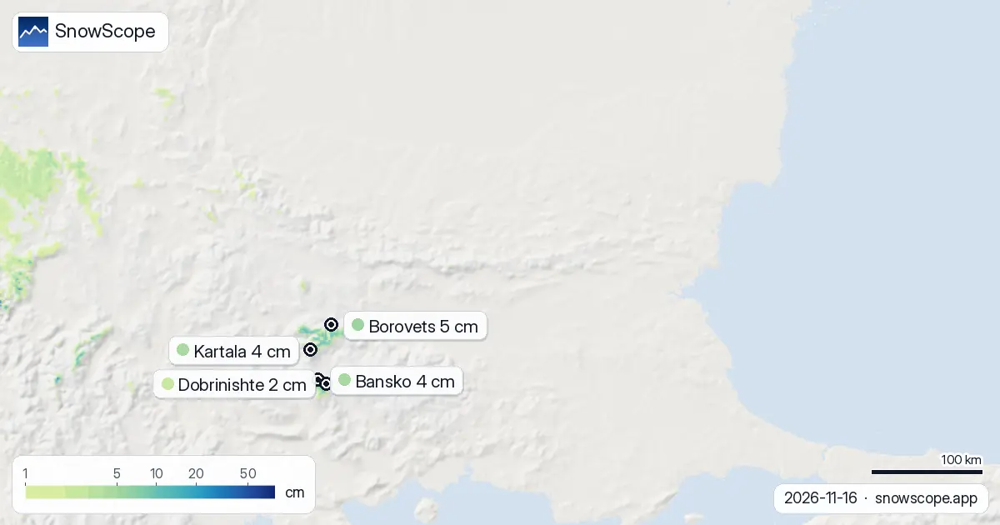

Боровец 5 см: България с 2% покритие, Румъния с 10%
На Боровец днес сутринта базата е 5 см от три дни свеж сняг. България вече е покрита с бяло на само 2 процента от планините си, докато Румъния на север има 10 процента покритие.
Вижте снежната прогноза за Borovets в приложението SnowScopeДебелина на снега, известия и 3D карта, безплатно.
Височините държат снега: Боровец посреща първия снежен ден на България на 2538 м
Работейки тези планини в първия снежен ден на България за сезона, видиш модела веднага. Снегът спира под 2100 метра. Полосите го показват: нищо под 2000 м, а между 2000 и 2500 м средната дълбочина е само 2 см. Само върховете над 2500 м имат истински сняг, средно 5 см с пълно покритие.
Боровец е достатъчно висок на върха си (2538 м), за да хвана този сняг. Най-голямата част на България е просто твърде ниска. Покритието от 2 процента отразява ранен сезон в сухива планинска страна. Румънските по-високи върхове, за разлика, надвишават снежната линия по-често, достигайки 10 процента.
| Country | White | Deepest resort | Next 7 days |
|---|---|---|---|
| Bulgaria | 2 % | Borovets | 9 cm |
| Romania | 10 % | Borsec | 13 cm |
| Serbia | 0 % | Avantura park | 8 cm |

Румънските планини са по-високи; Сърбия показва че зимата още се развива
Гледай на север към Румъния и картина се променя драстично. Борсец, водещ с 48 см, е девет пъти по-дълбок от Боровец. Покритието от 10 процента на Румъния има географски смисъл. На запад Сърбия озадачава: 0 процента покритие, но Avantura парк держи 28 см. Такава дълбочина без покритие означава, че снегът е разпръснат и висок, още не съединен в непрекъснато бяло.
Прогнозата също има значение. През следващите 7 дни Румъния ще има 13 см нов сняг; таванът на България е 9 см. Съседите ще имат както по-високи върхове, така и по-тежко време впреди.

Рила и Пирин: където дълбочината наистина е
Следи свежия сняг и ще намериш силните места на България. Планини Рила събраха 15 см през последния 72 часа—найдоброто в страната. Планини Пирин получиха 12 см. Тези високи гребени са където влагата приземления и остава. Само 5 от 11 курорта на България имат сняг на земята.
Боровец и Банско водят списъка на курортите по дълбочина, но обата са тънки под върховете си. Ако искаш сняг, който издържа и скиира добре, Рила и Пирин висок терен е където го намираш.
23 ноември е първия подходящ снежен ден; до тогава остава тихо
Следващите три дни ще предложат почти нищо—само 1 см в прогнозата. Но погледни напред на 23 ноември и прогнозата се променя. Този ден е прогнозиран като най-снежния: очаква се 5 см. Означи го като първия си истински снежен ден.
След 23 ноември, втората седмица на краят на ноември показва 6 см повече. Ранния сезон се развива бавно на Балканите.
Нагоре бързо в три дни, спад на седмицата
Събитието със сняг на 72 часа донесе 7 см в най-засегнатите райони, и покритието скочи. Вчера България имаше 630 км² в бяло; днес има 690 км²—изменение от 60 км² в един ден. Това е импулс от свежия сняг.
Но погледни назад седем дни и видиш че 1000 км² бяха покрити. Загубихме 310 км² бяло. Ноември е губещ месец на Балканите до краят на сезона. Времето варира в двете посоки.
Височината контролира всичко: сняг по метър
Моделът нарязва България по височина и историята е поразителна. Под 1500 м: без сняг. Между 1500 и 2000 м: все още нищо. Снежната линия е на 2100 м.
Скочи на 2000–2500 м и ще намериш средна дълбочина 2 см, с 75 процента от терена в бяло. Отиди над 2500 м и видиш средно 5 см с пълно покритие. Ранния сезон сняг изгаря или плъзга на топла земя. Само високите открити склонове го държат. Височинната полоса казва всичко.
Съвети за скиори
- На Боровец и Банско скийте над 2500 м; по-долу скали пробват и снегът топи до обяд.
- Насочи се към високите върхове на Рила и Пирин; держат 15 и 12 см съответно, два пъти повече от това, което базите на курортите показват.
- Снегът в началото на сезона е структурно слаб; преди да скиирате извън писта, консултирайте се с официалния лавинен бюлетин—новия сняг плъзга лесно.
- Избегни терена под 2100 м засега; долните долини ще останат кафяви поне още една седмица.
- Означи 23 ноември в календара си; това е прогнозирано като първия солиден снежен ден с очаквани 5 см.
About these numbers
Resort snow depths are the deepest snow on the resort's upper slopes from the SnowScope snow model (about 1 km, run of 16 ноември); they are estimates for an area, not a measurement at one point. Station values are measurements on the date shown. Forecasts can change. Always read the official avalanche bulletin before going off-piste.
Cite this report
For research, teaching or the press: the numbers and charts are free to reuse under CC BY 4.0 with this citation.
SnowScope (2026), Боровец 5 см: България с 2% покритие, Румъния с 10%, https://snowscope.app/blog/bg/2026/11/bulgaria-snow-report-16-november-2026.html, accessed 2026-11-16
SnowScope (Atlas Labs). (2026, November 16). Боровец 5 см: България с 2% покритие, Румъния с 10%. SnowScope snow reports. https://snowscope.app/blog/bg/2026/11/bulgaria-snow-report-16-november-2026.html
BibTeX
@misc{snowscope2026bulgariasnowreport16nove,
author = {{SnowScope (Atlas Labs)}},
title = {Боровец 5 см: България с 2% покритие, Румъния с 10%},
year = {2026},
month = nov,
howpublished = {\url{https://snowscope.app/blog/bg/2026/11/bulgaria-snow-report-16-november-2026.html}},
note = {Published 2026-11-16 20:42 UTC; accessed 2026-11-16}
}· CC BY 4.0 · Methods, data and tools →
Borovets: snow and temperature by height, this winter vs last (tools) →
Follow Borovets
Безплатно: съобщение, когато идва нов сняг, и прогнозата всяка сутрин.